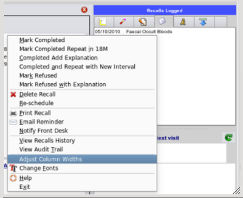
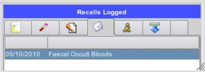

Column Widths for Lists
Wherever there are lists with multiple columns, it's a fair bet that the content of each column will not visually suit many
computer monitor resolutions, so on the popup menu overlying these lists, there is usually an option to adjust the column widths,
which are then saved back to a configuration file once the form is closed or the program exits.

Once you have clicked on the 'Adjust Column widths' option on the menu, an adjustable column header will appear over the list.

You may grab the little divider with the mouse and adjust the size of all the columns.
Once satisfied with the visual appearance, just click on any row in the list and the adjustments will be saved.